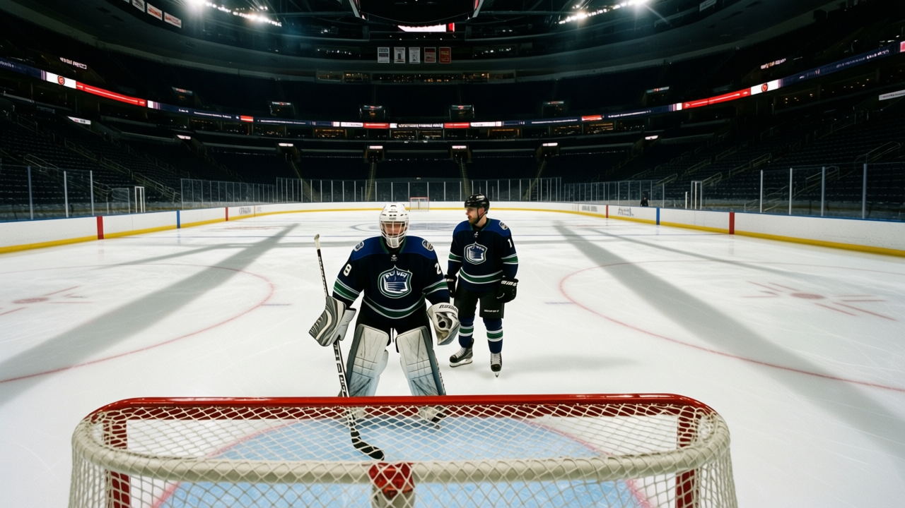

$29.97M, 35 Men, 2,349 Minutes: Minnesota Runs the Thinnest Bench in Hockey
The most profitable club in hockey uses the fewest skaters and separates its top man from its last by 2,349 minutes, the widest gap in the league. The model works in the office and fails on the ice.
 Doug ReimerAnalytics editor, ex-video coach · The Slot Report
Doug ReimerAnalytics editor, ex-video coach · The Slot Report
The piece
 Minnesota Wild finishes games ahead of 29 other clubs on one line of the spreadsheet: $34.64M profit per game, the highest in hockey. They finish 25th on the standings line, 38 points, 12 wins and 23 losses in 38 points. The same roster construction drives both.
Minnesota Wild finishes games ahead of 29 other clubs on one line of the spreadsheet: $34.64M profit per game, the highest in hockey. They finish 25th on the standings line, 38 points, 12 wins and 23 losses in 38 points. The same roster construction drives both.
Minnesota spent $29.97M in salaries this season.  Atlanta Thrashers is next at $36.79M. Against that payroll, the Wild took $58.22M in revenue per game, 6th-highest in the league. The spread between revenue and salaries is the most profitable room in hockey.
Atlanta Thrashers is next at $36.79M. Against that payroll, the Wild took $58.22M in revenue per game, 6th-highest in the league. The spread between revenue and salaries is the most profitable room in hockey.
The operational cost of that payroll discipline: only 35 skaters appeared in a Minnesota game this season, the fewest in the league.  Dallas Stars and
Dallas Stars and  Tampa Bay Lightning are next at 36. Minnesota has 7 fewer men than
Tampa Bay Lightning are next at 36. Minnesota has 7 fewer men than  Ottawa Senators at the other end, which dressed 42.
Ottawa Senators at the other end, which dressed 42.
The gap
Across those 35 skaters, the spread between the most-used and least-used player is 2,349 minutes. No other team exceeds 2,340. The top man logged 2,581 minutes; the last man logged 232. The average per skater sits at 16.8 minutes a game, tied for 4th in the league: on any given night the men Minnesota dresses get more minutes than most clubs give theirs. But the minutes sit in fewer bodies.
 Nashville Predators also gives high minutes (17.6 per skater, highest in hockey) but spreads them across 41 men with a gap of 1,951. The Predators sit 4th with 59 points. Same philosophy, opposite extreme: 41 bodies and a 1,951 gap produce 59 points, while 35 bodies and a 2,349 gap produce 38.
Nashville Predators also gives high minutes (17.6 per skater, highest in hockey) but spreads them across 41 men with a gap of 1,951. The Predators sit 4th with 59 points. Same philosophy, opposite extreme: 41 bodies and a 1,951 gap produce 59 points, while 35 bodies and a 2,349 gap produce 38.
The roster math explains why this happens. With the lowest payroll in the league, Minnesota can't afford depth. Thirty-five usable skaters leaves the coach no choice but to lean on the top lines, and by February the top four wear down while the 35th man logs cup-of-coffee shifts that never cross 8 minutes in any game.
It isn't health
The 24 injury spells on Minnesota's ledger produced 61 days lost. Only  Toronto Maple Leafs (40), Dallas Stars (45) and Atlanta Thrashers (54) are lower. The Morale Scale gives them 90.4, 14th of 30. Roster construction explains 25th place, not injuries and not morale.
Toronto Maple Leafs (40), Dallas Stars (45) and Atlanta Thrashers (54) are lower. The Morale Scale gives them 90.4, 14th of 30. Roster construction explains 25th place, not injuries and not morale.
The ceiling
 Manny Fernandez85 is the highest-rated Minnesota player in the Book's top 60, at 87 overall. A goaltender.
Manny Fernandez85 is the highest-rated Minnesota player in the Book's top 60, at 87 overall. A goaltender.  Dwayne Roloson84 sits at 86. No Minnesota skater appears in the Bureau's top 60 at all.
Dwayne Roloson84 sits at 86. No Minnesota skater appears in the Bureau's top 60 at all.
Among the Bureau's risers, Pierre-Marc Bouchard75 grades 77 with a +6 on the Development Index: 19 points in 44 games, a 20-year-old center whose form is up because his base is low. When the fifth-best skater on the depth chart grades 77 and the league average for a top-six forward sits in the low 80s, the third line loses every matchup and the coach responds by shortening the bench. Minutes concentrate, the gap widens, and that gap is already the widest in hockey.
The trade-off
The Minnesota model produces more profit per game than any other front office in hockey. A 25th-place record and $34.64M in the bank is a choice, and the organization has made it deliberately. The cost: 2,349 minutes of ice-time inequality between the first man and the last, a roster so thin that no arrangement of it closes the gap to a top-16 point total, and a payroll that buys fewer bodies than any other club in the league.
Minnesota Wild's $0.79M per point ties Nashville Predators for 4th-best in hockey. They get value from every dollar and just don't have enough of them.